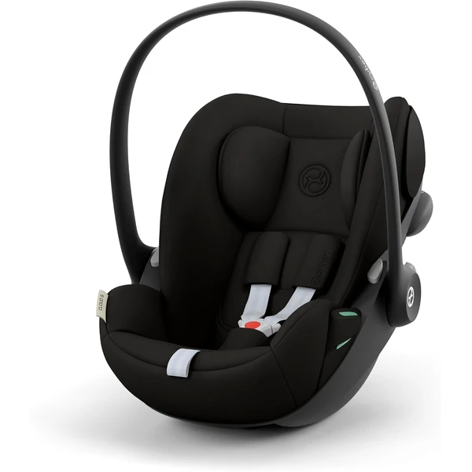
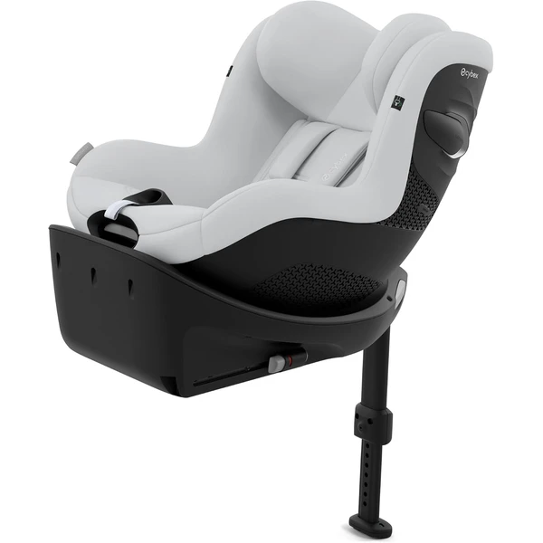

En España es obligatorio el uso de un sistema de retención infantil (silla o elevador) homologado para todos los menores hasta que midan 135 cm o cumplan 12 años, lo que ocurra primero. El sistema debe ir siempre instalado en el asiento trasero, salvo excepciones concretas recogidas en el reglamento.
Ambas normativas conviven hoy en el mercado y ambas son legales — no es obligatorio comprar i-Size si tu silla R44/04 es correcta y está en buen estado, pero i-Size incorpora protección adicional frente a impactos laterales.
Si tienes dudas sobre qué grupo o rango de altura necesita tu hijo ahora mismo, consulta la tabla completa en el pilar general o en las guías específicas:
Compara las principales marcas de sillitas de coche y descubre sus diferencias antes de elegir la que mejor se adapte a tu familia.

Capazo i-Size para los primeros meses, ligero (3,9 kg) y a contramarcha, pensado para instalarse con la Base G de Cybex (se vende aparte) y compatible como sistema de viaje con cochecitos Cybex/gb mediante adaptador.
Características principales
Lo que destacan las familias
Lo sencillo que resulta instalarla —tanto con Isofix como solo con el cinturón— y su compatibilidad con los cochecitos Cybex mediante adaptadores, para usarla también como sistema de viaje.

Silla i-Size giratoria 360° pensada para acompañar desde los 3 meses hasta los 4 años, con reclinado en 5 posiciones y protección lateral LSP incorporada de serie.
Características principales
Lo que destacan las familias
Lo cómodo que resulta girar la silla para sentar y sacar al niño sin forzar la espalda, junto con la sensación de calidad y seguridad que transmite el sistema de protección lateral.
Ver también la guía completa de Cybex.
No, una silla R44/04 en buen estado y correctamente homologada sigue siendo legal.
Hasta que el menor mida 135 cm o cumpla 12 años, lo que ocurra antes.
Solo en casos excepcionales recogidos en el reglamento, y desactivando el airbag frontal correspondiente.
Guía informativa de Lauderem. Los enlaces a productos llevan directamente a la ficha en Amazon.es.